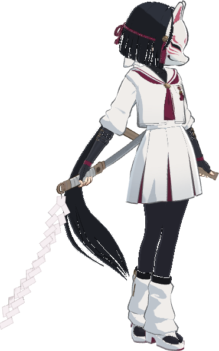
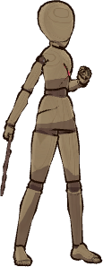
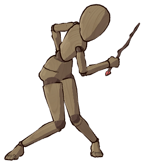
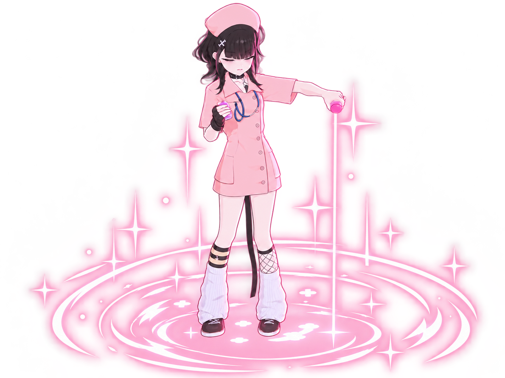
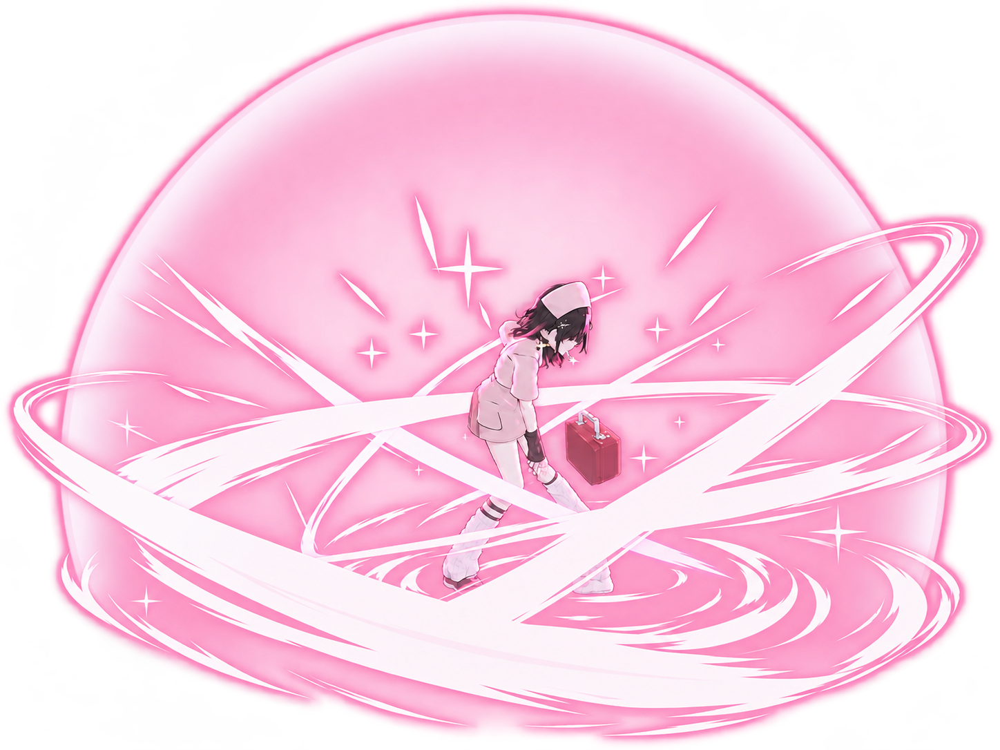
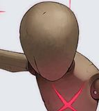

파티 편성
빈 슬롯에 배치할 캐릭터를 아래 목록에서 선택하세요.
캐릭터 목록
초상화를 클릭하면 편성되고, 선택된 초상화를 다시 누르면 편성에서 해제됩니다.
검색 결과가 없습니다.

편성한 파티를 불러오고 있습니다.







전투 기록
라운드별 아군·적 행동과 효과 변화를 확인하세요.
전투 설정
상대할 패턴과 시험 조건을 선택하세요.
스킬 계수 적용 · 100% = 피해 1 [임시]
일반 스킬 기본 피해 2 · 적 BP 200 / 아군 BP 100 [임시]
아군·적 기본 치명타 25% · 치명타 피해 200% [임시]
HP 피해: 패턴 피해 × 패링 보정 ÷ (1 + 방어력 증가율) × 받는 피해 감소 보정 × 저주 보정 [임시]
적 치명타는 HP 피해에 2배 적용 · 보호막은 최종 HP 피해부터 흡수 · 방어력·보호막은 BP 피해에 미적용 [임시]
파랑 650/20 · 노랑 850/35 · 빨강 750/25 · 보라 1000/40 (기준 HP/BP) [임시]
노랑 PERFECT 85/5 · GOOD 255/10 (방어·저주·치명타 적용 전) [임시]
아군 BP 자연 회복 없음 · BREAK 중 BP 0 유지 · 복귀 시 전부 회복
아군 BREAK: 현재 라운드의 남은 행동과 다음 라운드 행동 불가 · 다른 아군으로 교체 가능 (AP 1)
ACTION 기본 AP = 생존 파티원 수 · 적 BREAK 보상은 다음 ACTION에 AP +2
카운터 입력 AP 1 · 성공 후 자동 일반 스킬은 AP 추가 소모 없음
궁극기: US 충전량 미확정으로 사용 제한에서 제외 · AP·CT·행동 가능 상태 적용 [임시]
브레이크 시 다음 ACTION에 AP +2가 자동 지급됩니다. 기본 능력치·BP 피해는 시험값입니다. 타격력은 HP 피해가 아닌 브레이크 감소에 적용됩니다.
조작법과 진행 규칙
- 기본 AP는 생존 캐릭터 1명당 1입니다.
- 공격 중 누른 행동은 남은 AP 범위에서 순서대로 예약됩니다.
- ENGAGE와 브레이크 대기 ACTION은 1.5초간 입력이 없으면 다음 라운드로 넘어갑니다. 차지·공격·예약 처리 중에는 대기 시간을 차감하지 않습니다.